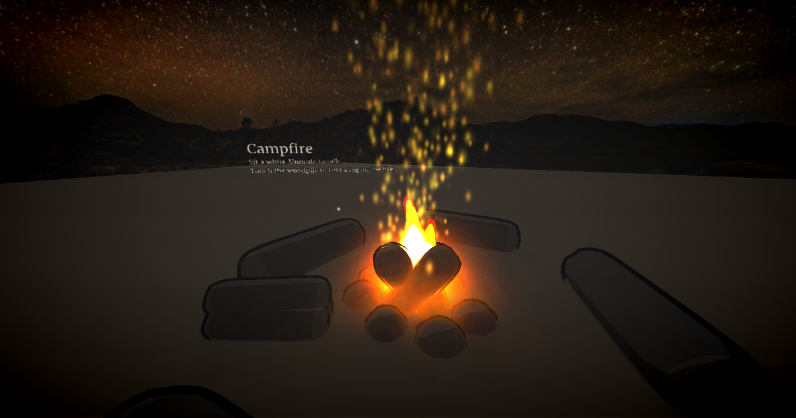

Enter world →No. 04
Campfire
A fire under the Milky Way, somewhere quiet. Sit a while and talk with whoever else is here. Touch the woodpile and the fire roars for everyone.
<!-- a real night sky, as one tag -->
<meta name="webspace.environment.sky"
content="sky.jpg">